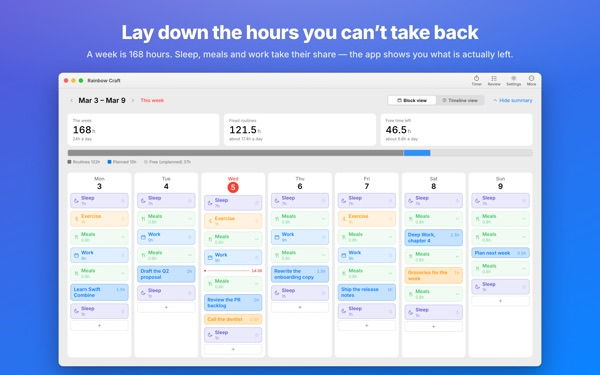
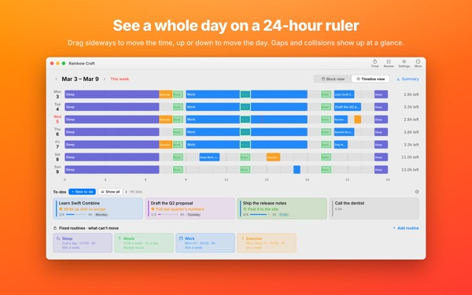
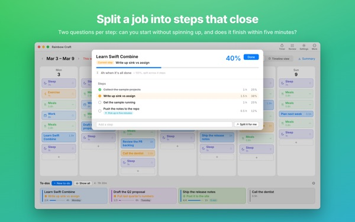
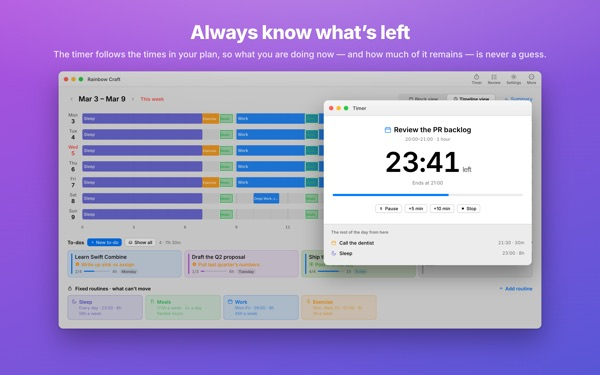
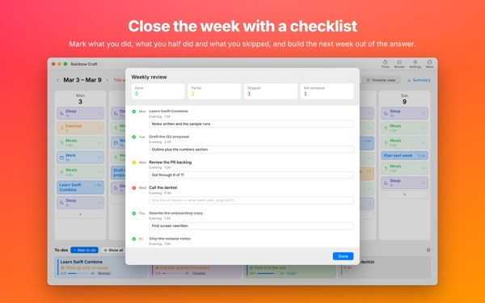

Will it all
fit this week?
Rainbow Craft lays your week out by day and hour on your Mac. Start with the time you can't give up, like sleep, meals and work, then drag to-dos into what's left and see what actually fits.
Planning, routines, to-dos, reviews, timer and calendar import are free.

Plan a week right here
We've laid down the four routines the app suggests when you first open it. Switch them on and off, then drop to-dos onto the days.
The list keeps growing. The week never does.
A to-do list can't tell you whether your week can actually hold it. Once sleep, meals and the commute take their share, there's less left than you think. Rainbow Craft shows those hours as numbers and blocks, and lets you try each to-do in a real slot.
See a day across 24 hours
The timeline lays a day out on a 24-hour ruler. Gaps and overlaps are easy to spot, and you choose how overlapping items are arranged.
Bring in meetings and appointments from Calendar on your Mac instead of typing them twice. If you like, plans can also go into a separate Rainbow Craft calendar you can see on your iPhone. Your other calendars are never changed.

Split big jobs into steps that finish
Big jobs stall when something is still in the way. The app asks two questions about every step: can you start without warming up, and can you finish it in five minutes?
Steps that pass both are fragments you can grab whenever five minutes open up. Everything else needs time set aside. If the app guesses wrong, overrule it.

What you're on, and how long is left
When a plan's start time arrives it turns in progress, and once its time is up the app asks whether you finished. The timer follows your timeline.
The Now Timer widget shows what you're on and how long is left without opening the app.

Close the week with a checklist
The weekly review is one card per day. Mark what you did, half did or skipped, and use it to plan the next week.
On the same iCloud account, to-dos move between this app and Rainbow of Desire on iPhone, so today's plan from your Mac goes with you.

Three steps to start
- 1
Set your fixed hours
Add the time that comes back every week, like sleep, meals and work, as routines. Nothing is filled in for you.
- 2
Write your to-dos
One line each in To-dos at the bottom. You don't have to decide when yet.
- 3
Drag them onto days
Drop one on a day and it becomes a plan. Dates slip? Drag it to another day or back to the list.
The math with the suggested routines
- A week
- 168 hours
- Sleep · 8 hours a day
- 56 hours
- Meals · three a day
- 17.5 hours
- Work · school · 9 hours on weekdays
- 45 hours
- Exercise · 1 hour Mon, Wed, Fri
- 3 hours
- Time you really have this week
- 46.5 hours
These are only suggestions. Pick and adjust routines to fit your life, and take a day off work out on its own when you're on leave or a trip.
Everything you need to live this week is free
Free
- Week and day plans, routines and to-dos, no limits
- Timeline view and step splitting
- Weekly review, and copying it as text
- Timer and the Now Timer widget
- Calendar import
- Sync with Rainbow of Desire on iPhone
- Review trends for the last 2 weeks
Plus · Pro
- Plus: 8 weeks of review trends, your best days and hours
- Plus: planned versus actual time
- Plus: lay a good week's plan onto this week in one go
- Pro: everything in Plus, plus a view-only link to share your schedule
- Pro: one purchase unlocks Pro in the iPhone app too
Each tier is a yearly subscription or a one-time lifetime purchase
See prices in the app or on the App Store. The yearly plan renews automatically unless cancelled at least 24 hours before the period ends. Pro bought on iPhone also unlocks on a Mac with the same iCloud account.
Questions
Do I need to be signed in to iCloud?
Not if you only use it on your Mac. You need it to sync with your iPhone and to share your schedule.
Does the app change my calendars?
It never changes the calendars you already have. Calendar import only reads the ones you pick. If you turn on writing plans to the Rainbow Craft calendar, the app creates that separate calendar and writes only there. You can delete it in Calendar at any time.
To-dos from my Mac don't show up on my iPhone.
Check that both devices use the same iCloud account and that Rainbow of Desire is installed on the iPhone. Sync goes through iCloud, so it can take a few minutes.
Does closing the window quit the app?
No. The app keeps running. Reopen the window from the Window menu, or click the Dock icon.
What happens to my to-dos and plans when I update?
They stay exactly as they are. Updates never change or delete what you wrote.
How do I change the app's language?
Pick one under Language · 언어 · 語言 at the top of Settings and the app reopens in it. There are 23 languages. Routine names and to-dos you typed yourself aren't translated.
I switched Macs and lost Plus or Pro.
Sign in with the same Apple Account and click Restore Purchases in Settings. To cancel, use your account settings in the App Store.
Where is what I write stored?
There's no account, no sign-up and no developer server holding your plans. What you write stays on your devices and in your own iCloud. The app sends anonymous usage counts that never include what you write, and you can turn them off in Settings.
Stuck or something looks off? Write to mizzking75@gmail.com. You can also reach us from Settings in the app.